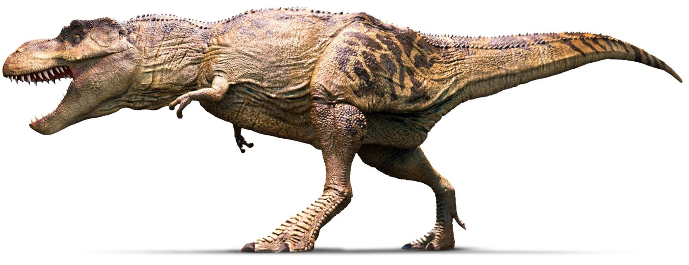

Тираннозавр - крупнейший динозавр-хищник,
обитавший в Северной Америке в конце мелового периода (67 - 65,5 миллионов лет назад).

Научная классификация:
Царство:Животные
Тип:Хордовые
Класс:Пресмыкающиеся
Отряд:Ящеротазовые
Семейство:Тираннозавриды
Род:Тираннозавр
Описание
Размеры
Длина тела тиранозавра составляла почти 13 метров, рост мог достигать 3,4 - 4 м, а вес составлял пости 8 тонн.
Телосложение
Шея тираннозавра, как и у других теропод, имела S-образную форму, но была короткой и мускулистой, что позволяло ей удерживать массивную голову. Передние конечности имели только два когтистых пальца.Задние конечности, напротив, были самыми длинными (по отношению к телу) среди всех теропод.
Череп
Скелет состоял из 299 костей, из них 58 отведено на череп. Самый большой из когда-либо найденных полных черепов тираннозавра в длину достигает примерно полутора метров.
Самые интересные факты о тиранозаврах
Название «Tyrannosaurus rex» придумал президент Американского музея естественной истории Генри Файрфилд Осборн в 1905 году. В переводе с латыни название означает «королевский ящер-тиран»
Сила укуса тираннозавра была самой большой среди таковой у всех когда-либо живших наземных животных. В среднем сила укуса этого динозавра была эквивалентна весу трех микролитражных автомобилей
Учёные установили, что тираннозавр имел самый большой относительный размер мозга среди всех нептичьих динозавров. Однако размер мозга у этих динозавров таков, что он не превышает размер мозга у современных рептилий.
Ученые считают, что этот мощный хищник мог «вырывать» из добычи до 230 кг мяса за один укус
Вопрос о максимальной скорости тираннозавра в научных кругах до сих пор остаётся открытым. Наименьшая оценка — от 18 км/ч, а наивысшая — 72 км/ч.